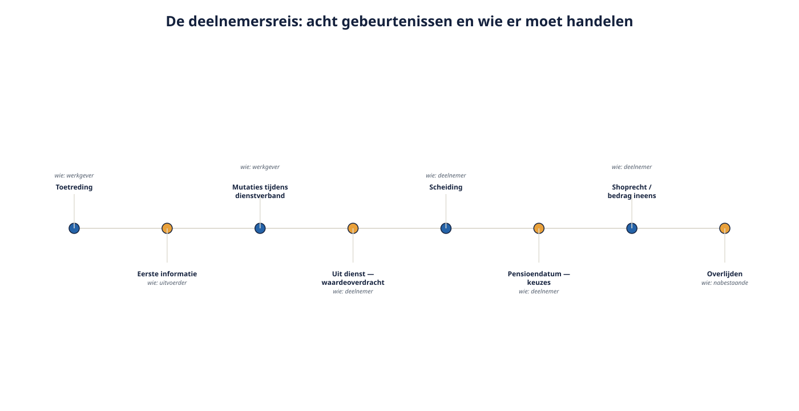

Deel 9 — Slidedeck
De deelnemersreis · 27 slides
Slide 1 — Titel
Deel 9: De deelnemersreis Eén mens, één dossier, van eerste werkdag tot na overlijden
Slide 2 — Perspectiefwissel
Tot nu toe: de regeling Vandaag: de deelnemer
Slide 3 — De kernzin van vandaag
Pensioenfouten ontstaan op overgangsmomenten, niet in de rustige jaren.
Slide 4 — De reis

Toetreding · mutaties · samenwonen · scheiding · ziekte · uit dienst · pensioendatum · overlijden
Slide 5 — Opdracht 9.1
Wie moet er handelen bij elke gebeurtenis?
Slide 6 — De uitkomst
Bij twee gebeurtenissen moet de deelnemer zelf het initiatief nemen Samenwonen · scheiding En dat zijn precies de twee waar het misgaat
Slide 7 — Start van de deelname
- Toetredingsleeftijd 18 jaar
- Eerste informatie door de uitvoerder
- Aanmelding door de werkgever — kritisch proces
Slide 8 — Transitiepunt
Bij twee regelingen (deel 6) bepaalt de indiensttredingsdatum in welke regeling iemand terechtkomt — voor zijn hele loopbaan daar
Slide 9 — Mutaties tijdens het dienstverband
Salaris · arbeidsduur · verlof · arbeidsongeschiktheid · partner · kinderen De pensioenadministratie is zo goed als de salarisadministratie
Slide 10 — Jeroen en Sanne
Samenwonend sinds 2019 · nooit aangemeld · overlijden in 2026 Wat is de uitkomst?
Slide 11 — De vraag aan de zaal
Wie van jullie heeft ooit zélf een partner aangemeld bij een pensioenuitvoerder?
Slide 12 — De zin die had moeten staan
“Woon je samen zonder te trouwen? Dan is je partner pas verzekerd als je hem of haar bij ons aanmeldt — dat gaat niet automatisch.”
Slide 13 — Uit dienst: drie routes
- Laten staan
- Waardeoverdracht op verzoek
- Automatische overdracht van kleine pensioenen
Slide 14 — “Zal ik alles bij elkaar zetten?”
Vijf dingen die je eerst moet weten →
Slide 15 — De vijf
- Garantie of belegd kapitaal?
- Kosten in beide regelingen
- Uitkeringsvorm en shoprecht
- Meeverzekerde nabestaandendekking
- Omvang — klein pensioen?
Slide 16 — Samenvoegen is niet standaard gunstig
Overzicht is één afweging, niet de zwaarste
Slide 17 — Scheiding: de hoofdregel
Verevening — de helft van het tijdens het huwelijk opgebouwde ouderdomspensioen Blijft verbonden aan het leven van de deelnemer
Slide 18 — Conversie
Zelfstandig eigen recht voor de ex-partner Valt niet terug bij diens vooroverlijden
Slide 19 — Opdracht 9.4
Drie scheidingen. Verevening of conversie? Docentnotitie: bij b lopen de belangen uiteen — dat is een onderhandelingspunt.
Slide 20 — Het bijzonder partnerpensioen
De ex-partner houdt het tot de scheidingsdatum opgebouwde partnerpensioen
Slide 21 — Maar
Bij een partnerpensioen op risicobasis is er niets opgebouwd Dus geen bijzonder partnerpensioen Docentnotitie: volgt rechtstreeks uit deel 8. Mediators zijn hier niet altijd op bedacht.
Slide 22 — De pensioendatum
Vervroegen · deeltijd · hoog-laag · uitruil · vast of variabel · shoprecht · bedrag ineens
Slide 23 — Eén vraag bij elke keuze
Wat kun je hierna nog terugdraaien?
Antwoord: meestal niets
Slide 24 — Twee waarschuwingen
Shoprecht — bij een premie-uitkeringsovereenkomst is er geen kapitaal om mee te shoppen Bedrag ineens — wettelijk geregeld, inwerkingtreding uitgesteld naar 1 januari 2029
Slide 25 — Keuzebegeleiding
Meer dan informeren · minder dan adviseren Wettelijke plicht van de uitvoerder — deel 17
Slide 26 — Het dossier van Karel
1994 middelloon · 2010 staffel · 2013 scheiding · 2017 hertrouwd · 2027 transitie · 2036 pensioen Vier bronnen, vier uitvoerders, vier sets keuzes
Slide 27 — De vraag die overblijft
Wie overziet dit geheel?
Niemand automatisch — en daarom bestaat dit vak
Huiswerk: opdracht 9.8, basis voor de capstone in deel 10. Neem je antwoorden van opdracht 1.1 mee.